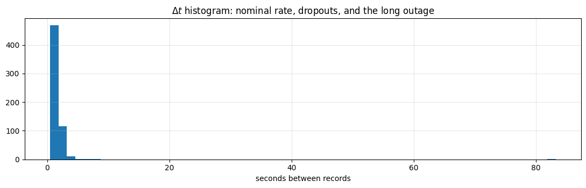
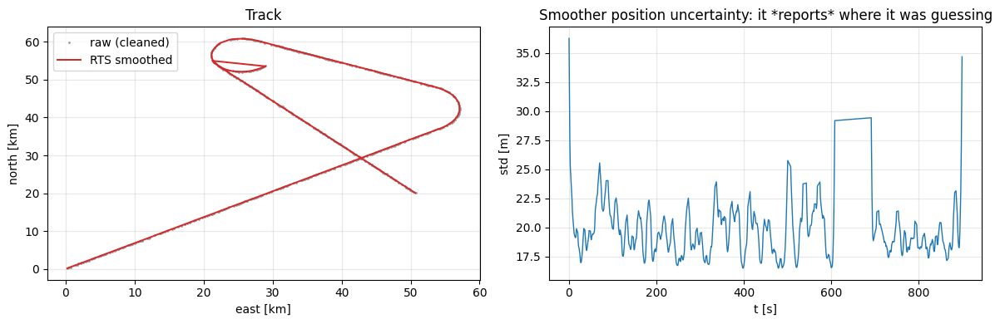
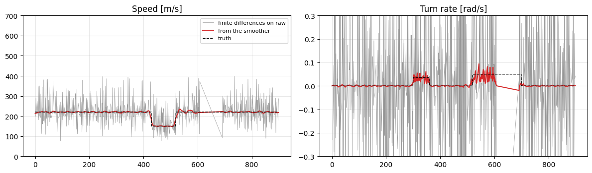
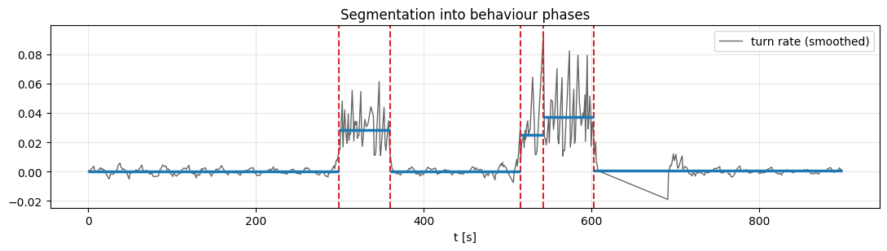

Walkthrough - Raw Messy Trajectory to a Clean, Feature-Rich Representation#
A realistic mess: lat/lon in degrees, irregular timestamps, duplicates, out-of-order records, dropouts and a few impossible positions. We turn it into something modellable, and at each step we ask the two questions from Chapter 3:
which models does this choice make feasible downstream?
which biases and artifacts does it introduce?
Companion lessons: L01, L02, L03.
import matplotlib.pyplot as plt
import numpy as np
RNG = np.random.default_rng(3)
plt.rcParams.update({"figure.figsize": (11, 3.6), "axes.grid": True, "grid.alpha": 0.3})
Part 1 - Simulate a raw feed#
Truth: a flight from a point near (32.0 N, 34.9 E) that cruises, turns, holds, then cruises out. The recorder is imperfect in all the usual ways.
DT, T = 1.0, 900
LAT0, LON0 = 32.0, 34.9
# --- truth in a local ENU frame (metres), built from a turn-rate profile ---
omega = np.zeros(T)
omega[300:360] = 0.035 # first turn
omega[520:700] = 0.05 # a holding pattern
speed = np.full(T, 220.0)
speed[430:520] = 150.0 # slow down before the hold
hdg = np.cumsum(omega * DT) + 0.6
vel = np.c_[speed * np.cos(hdg), speed * np.sin(hdg)]
enu_true = np.cumsum(vel * DT, axis=0)
# --- convert to lat/lon so we start where a real feed starts ---
M_PER_DEG_LAT = 111_320.0
m_per_deg_lon = M_PER_DEG_LAT * np.cos(np.deg2rad(LAT0))
lat = LAT0 + enu_true[:, 1] / M_PER_DEG_LAT
lon = LON0 + enu_true[:, 0] / m_per_deg_lon
t = np.arange(T, dtype=float)
# --- corrupt it: sensor noise, dropouts, jitter, duplicates, disorder, outliers ---
lat_n = lat + RNG.normal(0, 40 / M_PER_DEG_LAT, T)
lon_n = lon + RNG.normal(0, 40 / m_per_deg_lon, T)
keep = np.ones(T, bool)
keep[RNG.random(T) < 0.25] = False # 25% random dropout
keep[610:690] = False # one long outage inside the hold
raw_t, raw_lat, raw_lon = t[keep], lat_n[keep], lon_n[keep]
raw_t = raw_t + RNG.normal(0, 0.15, raw_t.size) # timestamp jitter
dup = RNG.choice(raw_t.size, 20, replace=False) # duplicated records
raw_t = np.r_[raw_t, raw_t[dup]]
raw_lat = np.r_[raw_lat, raw_lat[dup]]
raw_lon = np.r_[raw_lon, raw_lon[dup]]
out = RNG.choice(raw_t.size, 8, replace=False) # impossible jumps
raw_lat[out] += RNG.normal(0, 0.05, 8)
raw_lon[out] += RNG.normal(0, 0.05, 8)
order = RNG.permutation(raw_t.size) # arrives out of order
raw_t, raw_lat, raw_lon = raw_t[order], raw_lat[order], raw_lon[order]
print(f"raw records: {raw_t.size} time range: {raw_t.min():.1f}..{raw_t.max():.1f} s")
print("first five records, as they arrive:")
for i in range(5):
print(f" t={raw_t[i]:8.2f} lat={raw_lat[i]:.5f} lon={raw_lon[i]:.5f}")
raw records: 621 time range: 0.1..898.8 s
first five records, as they arrive:
t= 591.06 lat=32.46786 lon=35.17215
t= 449.57 lat=32.50348 lon=35.28827
t= 736.84 lat=32.42338 lon=35.19302
t= 341.97 lat=32.40998 lon=35.49615
t= 398.97 lat=32.46588 lon=35.38132
Part 2 - Clean: sort, deduplicate, sanity-check#
Do this before anything else. Every downstream computation assumes a monotone time axis.
idx = np.argsort(raw_t)
tt, la, lo = raw_t[idx], raw_lat[idx], raw_lon[idx]
uniq = np.r_[True, np.diff(tt) > 1e-6] # drop duplicate timestamps
tt, la, lo = tt[uniq], la[uniq], lo[uniq]
print(f"after sort + dedup: {tt.size} records")
dts = np.diff(tt)
plt.hist(dts, bins=60)
plt.title("$\\Delta t$ histogram: nominal rate, dropouts, and the long outage")
plt.xlabel("seconds between records")
plt.tight_layout()
print(f"median dt {np.median(dts):.2f}s 90th pct {np.percentile(dts, 90):.2f}s max {dts.max():.1f}s")
after sort + dedup: 601 records
median dt 1.09s 90th pct 2.25s max 83.3s

Part 3 - Get out of degrees: a local ENU frame#
Latitude and longitude degrees are not the same length, and neither is a metre. Convert once, at the start, and do every kinematic computation in metres (Chapter 3 Lesson 02).
def to_enu(lat_deg, lon_deg, lat0=LAT0, lon0=LON0):
"""Equirectangular local tangent plane - fine over a few hundred km."""
e = (lon_deg - lon0) * M_PER_DEG_LAT * np.cos(np.deg2rad(lat0))
n = (lat_deg - lat0) * M_PER_DEG_LAT
return np.c_[e, n]
enu = to_enu(la, lo)
# what happens if you forget: treat degrees as a plane and scale by a single constant
naive = np.c_[(lo - LON0), (la - LAT0)] * M_PER_DEG_LAT
seg_true = np.linalg.norm(np.diff(to_enu(lat, lon), axis=0), axis=1).sum()
seg_naive = np.linalg.norm(np.diff(naive, axis=0), axis=1).sum()
print(f"path length, correct frame: {seg_true / 1000:8.1f} km")
print(f"path length, degrees-as-metres: {seg_naive / 1000:8.1f} km"
f" ({100 * (seg_naive / seg_true - 1):+.0f}% error at latitude {LAT0})")
path length, correct frame: 191.5 km
path length, degrees-as-metres: 351.9 km (+84% error at latitude 32.0)
Part 4 - Outliers: gate them, do not smooth over them#
A physically impossible speed between consecutive reports is not noise, it is a bad record. Removing it before filtering is much safer than hoping the filter’s gain will absorb it.
V_MAX = 400.0 # m/s, generous for this platform
step_v = np.r_[0, np.linalg.norm(np.diff(enu, axis=0), axis=1) / np.diff(tt)]
bad = step_v > V_MAX
print(f"rejected {bad.sum()} records with implied speed > {V_MAX} m/s "
f"(max implied speed was {step_v.max():.0f} m/s)")
tt, enu = tt[~bad], enu[~bad]
rejected 30 records with implied speed > 400.0 m/s (max implied speed was 17423 m/s)
Part 5 - Segment at real gaps#
A 78-second outage is not something to interpolate across; bridging it fabricates a straight leg and two corners. Split there instead, and let downstream code see two segments.
GAP = 20.0 # seconds; longer than any plausible dropout
breaks = np.where(np.diff(tt) > GAP)[0] + 1
segments = np.split(np.arange(tt.size), breaks)
print(f"{len(segments)} segments: " + ", ".join(f"{len(s)} pts" for s in segments))
2 segments: 419 pts, 152 pts
Part 6 - Model-based smoothing with irregular \(\Delta t\)#
The right resampler for kinematic data is a Kalman filter with \(F(\Delta t)\) and \(Q(\Delta t)\) recomputed at every step (Chapter 2 Lesson 01, Chapter 3 Lesson 01), followed by an RTS backward pass. It gives velocity directly — no finite differences on noisy positions — and it reports its own uncertainty, so downstream code knows which points were guessed.
def kalman_rts(times, pos, sa=2.0, r_std=40.0):
"""CV Kalman filter + RTS smoother on irregular timestamps. State (px, vx, py, vy)."""
n = len(times)
H = np.array([[1.0, 0, 0, 0], [0, 0, 1.0, 0]])
R = r_std ** 2 * np.eye(2)
xf = np.zeros((n, 4))
Pf = np.zeros((n, 4, 4))
xp = np.zeros((n, 4))
Pp = np.zeros((n, 4, 4))
Fs = np.zeros((n, 4, 4))
x = np.array([pos[0, 0], 0.0, pos[0, 1], 0.0])
P = np.diag([100.0 ** 2, 200.0 ** 2, 100.0 ** 2, 200.0 ** 2])
for k in range(n):
dt = times[k] - times[k - 1] if k else 1.0
F = np.array([[1, dt, 0, 0], [0, 1, 0, 0], [0, 0, 1, dt], [0, 0, 0, 1]])
G = np.array([[dt ** 2 / 2, 0], [dt, 0], [0, dt ** 2 / 2], [0, dt]])
Q = sa ** 2 * G @ G.T
x, P = F @ x, F @ P @ F.T + Q
Fs[k], xp[k], Pp[k] = F, x, P
S = H @ P @ H.T + R
K = P @ H.T @ np.linalg.inv(S)
x = x + K @ (pos[k] - H @ x)
IKH = np.eye(4) - K @ H
P = IKH @ P @ IKH.T + K @ R @ K.T
xf[k], Pf[k] = x, P
# RTS backward pass
xs, Ps = xf.copy(), Pf.copy()
for k in range(n - 2, -1, -1):
C = Pf[k] @ Fs[k + 1].T @ np.linalg.inv(Pp[k + 1])
xs[k] = xf[k] + C @ (xs[k + 1] - xp[k + 1])
Ps[k] = Pf[k] + C @ (Ps[k + 1] - Pp[k + 1]) @ C.T
return xs, Ps
states, covs = [], []
for s in segments:
xs, Ps = kalman_rts(tt[s], enu[s])
states.append(xs)
covs.append(Ps)
state = np.vstack(states)
cov = np.vstack(covs)
pos_std = np.sqrt(cov[:, 0, 0] + cov[:, 2, 2])
fig, ax = plt.subplots(1, 2, figsize=(12, 4))
ax[0].plot(enu[:, 0] / 1000, enu[:, 1] / 1000, ".", ms=2, color="0.6", label="raw (cleaned)")
ax[0].plot(state[:, 0] / 1000, state[:, 2] / 1000, "-", lw=1.4, color="tab:red", label="RTS smoothed")
ax[0].legend(); ax[0].set_xlabel("east [km]"); ax[0].set_ylabel("north [km]"); ax[0].set_title("Track")
ax[1].plot(tt, pos_std, lw=1)
ax[1].set_title("Smoother position uncertainty: it *reports* where it was guessing")
ax[1].set_xlabel("t [s]"); ax[1].set_ylabel("std [m]")
plt.tight_layout()

Part 7 - Kinematic features, done correctly#
Speed, heading, turn rate and curvature — from the smoothed state, never from finite differences on raw positions. The comparison below is the whole argument.
vx, vy = state[:, 1], state[:, 3]
speed_f = np.hypot(vx, vy)
hdg_f = np.unwrap(np.arctan2(vy, vx))
turn_f = np.r_[0, np.diff(hdg_f) / np.maximum(np.diff(tt), 1e-3)]
# the naive version, for comparison
d = np.diff(enu, axis=0)
dt_raw = np.maximum(np.diff(tt), 1e-3)
speed_raw = np.r_[np.nan, np.linalg.norm(d, axis=1) / dt_raw]
hdg_raw = np.r_[np.nan, np.unwrap(np.arctan2(d[:, 1], d[:, 0]))]
turn_raw = np.r_[np.nan, np.nan, np.diff(hdg_raw[1:]) / dt_raw[1:]]
fig, ax = plt.subplots(1, 2, figsize=(12, 3.6))
ax[0].plot(tt, speed_raw, lw=0.5, color="0.6", label="finite differences on raw")
ax[0].plot(tt, speed_f, lw=1.4, color="tab:red", label="from the smoother")
ax[0].plot(t, speed, "k--", lw=1, label="truth")
ax[0].set_ylim(0, 700); ax[0].legend(fontsize=8); ax[0].set_title("Speed [m/s]")
ax[1].plot(tt, turn_raw, lw=0.5, color="0.6")
ax[1].plot(tt, turn_f, lw=1.4, color="tab:red")
ax[1].plot(t, omega, "k--", lw=1)
ax[1].set_ylim(-0.3, 0.3); ax[1].set_title("Turn rate [rad/s]")
plt.tight_layout()
print(f"speed error, naive differences: {np.nanstd(speed_raw - np.interp(tt, t, speed)):7.1f} m/s")
print(f"speed error, smoothed state: {np.nanstd(speed_f - np.interp(tt, t, speed)):7.1f} m/s")
speed error, naive differences: 61.1 m/s
speed error, smoothed state: 4.9 m/s

Differentiating noisy positions turns a 40 m position error into a ~60 m/s speed error and a turn rate that is pure noise — the true signal (0.035-0.05 rad/s) is invisible in it. Any classifier fed the grey curve is learning the sensor, not the aircraft.
Part 8 - Segmentation by change point#
Now that turn rate is a usable signal, segment the flight into behaviour phases. We implement
exact dynamic-programming segmentation with a per-change-point penalty \(\beta\) — the objective
from Chapter 3 Lesson 03. (ruptures gives you PELT’s linear-time pruning; the objective is the
same.)
def segment_dp(y, beta, min_size=15):
"""Exact least-squares change-point detection: min sum-of-squares + beta * (#changes)."""
n = len(y)
cs, cs2 = np.r_[0, np.cumsum(y)], np.r_[0, np.cumsum(y ** 2)]
def cost(a, b): # SSE of y[a:b]
m = b - a
return cs2[b] - cs2[a] - (cs[b] - cs[a]) ** 2 / m
C = np.full(n + 1, np.inf)
C[0] = -beta
prev = np.zeros(n + 1, int)
for b in range(min_size, n + 1):
for a in range(0, b - min_size + 1):
if np.isfinite(C[a]):
v = C[a] + cost(a, b) + beta
if v < C[b]:
C[b], prev[b] = v, a
cps, b = [], n
while b > 0:
cps.append(b)
b = prev[b]
return sorted(cps)[:-1]
sig = (turn_f - turn_f.mean()) / turn_f.std() # standardise: beta then has a scale
cps = segment_dp(sig, beta=8.0)
print("change points at t =", [f"{tt[c]:.0f}s" for c in cps])
plt.figure(figsize=(11, 3.2))
plt.plot(tt, turn_f, lw=1, color="0.4", label="turn rate (smoothed)")
for c in cps:
plt.axvline(tt[c], color="tab:red", ls="--")
edges = [0] + cps + [len(tt)]
for a, b in zip(edges[:-1], edges[1:]):
plt.hlines(turn_f[a:b].mean(), tt[a], tt[min(b, len(tt) - 1)], color="tab:blue", lw=2.5)
plt.legend(); plt.title("Segmentation into behaviour phases"); plt.xlabel("t [s]")
plt.tight_layout()
change points at t = ['299s', '360s', '515s', '543s', '603s']

\(\beta\) is the number-of-segments knob — sweep it, do not trust a default#
for beta in [2, 4, 8, 16, 40, 100]:
print(f"beta={beta:>4} -> {len(segment_dp(sig, beta=beta)) + 1:>2} segments")
beta= 2 -> 7 segments
beta= 4 -> 6 segments
beta= 8 -> 6 segments
beta= 16 -> 5 segments
beta= 40 -> 5 segments
beta= 100 -> 3 segments
Part 9 - The segment table: the actual deliverable#
One row per segment, with duration, kinematics, and a data-quality column. This is what feeds Chapter 4 (classification) and Chapter 5 (anomaly detection), and the quality column is what stops you from “discovering” your own dropouts.
print(f"{'seg':>4}{'t0':>8}{'dur':>7}{'speed':>8}{'|turn|':>9}{'straight':>10}{'gap frac':>10}")
for i, (a, b) in enumerate(zip(edges[:-1], edges[1:])):
b = min(b, len(tt) - 1)
if b - a < 5:
continue
p = state[a:b, [0, 2]]
path = np.linalg.norm(np.diff(p, axis=0), axis=1).sum()
straight = np.linalg.norm(p[-1] - p[0]) / max(path, 1e-9)
gapfrac = 1 - (b - a) / max(tt[b] - tt[a], 1e-9) # 1 - records per second
print(f"{i:>4}{tt[a]:>8.0f}{tt[b] - tt[a]:>7.0f}{speed_f[a:b].mean():>8.0f}"
f"{np.abs(turn_f[a:b]).mean():>9.3f}{straight:>10.2f}{gapfrac:>10.2f}")
seg t0 dur speed |turn| straight gap frac
0 0 299 220 0.002 1.00 0.31
1 299 61 219 0.028 0.83 0.32
2 360 155 180 0.002 1.00 0.31
3 515 28 203 0.025 0.98 0.35
4 543 60 220 0.037 0.68 0.32
5 603 296 220 0.002 0.73 0.47
What each choice cost us#
Choice |
Makes feasible |
Introduces |
|---|---|---|
Sort + dedup + speed gate |
everything downstream |
a |
Local ENU frame |
Euclidean distances, motion models, \(Q\) in m²/s³ |
projection error away from the origin (small here, not always) |
Split at gaps > 20 s |
honest segments, no fabricated legs |
more, shorter segments; a threshold to defend |
Kalman/RTS smoothing |
clean velocity, turn rate, curvature; uncertainty per point |
a CV motion-model prior — real maneuvers are slightly flattened |
Change-point segmentation |
per-phase features, Markov/HMM models over phases |
\(\beta\) chooses the number of segments; boundaries are estimates |
Segment feature table |
tabular ML, the Chapter 0 baseline |
all within-segment ordering is gone |
And a leak to remember: the RTS smoother uses future measurements. These features are correct for offline classification and anomaly detection on completed tracks, and are not admissible for a real-time model — there, use the filtered (forward-only) state. That distinction is Chapter 1 Lesson 03, and it is the most common leak in trajectory pipelines.
Exercises#
Rebuild the feature table from the filtered state instead of the smoothed one. How much do turn-rate features change, and where?
Resample the smoothed track onto a 10 s grid and recompute the segment table. Which columns move, and does the hold survive?
Make dropouts informative — drop 80 % of records during the turn — and check whether the gap-fraction column correlates with the behaviour label. That correlation is a leak waiting to be discovered as a “result”.